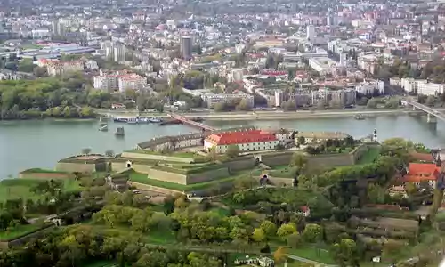

SRBIJA
Petrovaradinska tvrđava podignuta je kod Novog Sada, na desnoj obali Dunava, na mestu rimskog Kuzuma i srednjovekovnog Petrikona, čiji su ostaci
srušeni 1690. Sagrađena je od 1692. do 1780. na uzvišici iznad Dunava Tvrđava, kao fortifikacioni objekat po sistemu francuskih utvrđenja graditelja
Vobana, a prema projektu austrijskih vojnih inženjera Marsiljija, Kajzersfelda i Vamberga.

Sastoji se iz Gornjeg i Donjeg grada. Gornji grad je Tvrđava u užem smislu, opasana visokim bedemima sa strmim serpentinastim odsecima. Donji grad
čini malo naselje sa mrežom uskih ulica i višespratnih zgrada sa malim dvorištima. Zaštićen je otkopima i bedemima. U Gornjoj tvrđavi izgrađen je niz
podzemnih laguma i galerija, ukupne dužine 16 km. Na njoj se nalaze: Arsenal, Jednostavna kasarna, Duga kasarna, Oficirski paviljon i Toranj sa satom,
dok je Linhenštajnova kasarna porušena. U Donjoj tvrđavi – Vaserštatu, nalaze se oficirski stanovi sa magistratom, bolnice, stari arsenal, kasarna i
druge javne zgrade. Ispod same Tvrđave je župna crkva Sv. Juraja, a pravoslavna je u gradu. Vodena kapija danas je porušena. U okviru bedema je nova
Beogradska kapija.
Zaštitnim arheološkim istraživanjima početkom 21. veka otkriveni su kulturni slojevi od srednjeg paleolita do austrijskog perioda. Značajni su ostaci
cistercitske opatije iz 1243. posvećene Blaženoj devici Mariji, otkriveni ispod zgrade Arsenala, sada Muzeja grada Novog Sada.
Petrovaradinska tvrđava je danas najpoznatija po muzičkom festivalu „Exit“, koji se tu održava svake godine tokom jula. Na tvrđavi se održava i niz
drugih kulturnih i zabavnih događaja.